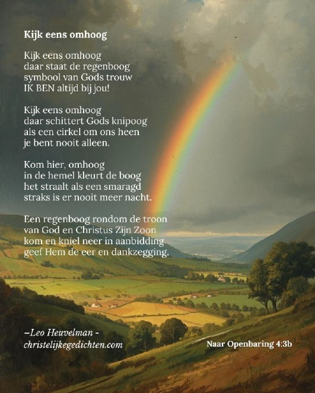

Agenda
Preekrooster
7 november - Mirjam Booij
14 november - Shirley Buitenman
21 november - Roelof Upperman
28 november - Riemer Postma
Opmerkingen
Tenzij anders vermeld, begint de Sabbatochtend om 10.00 uur met Bijbelstudie, waarna de
eredienst volgt om 11.00 uur.
Op de 1e en 3e sabbat van de maand zal een gezamenlijk gebedsmoment zijn;
op de 1e sabbat een stil gebed en op de 3e sabbat een kringgebed.
Sabbatschool
Wat waardevol dat we de gelegenheid hebben om in de Sabbatschool met elkaar de Bijbel te bestuderen, te groeien, naar elkaar te luisteren en elkaar te bemoedigen. Zoals het lied zegt: Samen bidden, samen zoeken naar het plan van onze Heer.
Welkom elke sabbatmorgen om 10.00 uur!
Landelijke activiteiten
De landelijke activiteiten kunt u vinden via: https://www.adventist.nl/agenda/
Lokale agenda
Heilig avondmaal
U bent van harte uitgenodigd sabbat 28 november om deel te nemen aan de voetwassing en aansluitend het Heilig Avondmaal. De dienst wordt geleid door Riemer Postma.
Speciale dienst 26 december
Kerst; omstreden want Jezus is niet geboren op 25 december.. Toch mogen we rondom deze dagen, zoals elke dag, stilstaan bij wat Jezus voor ons deed en nog gaat doen.
Thema: Jij wordt gezien! Aanvang 10.00 uur.
Na de dienst is er iets te drinken en staat er een heerlijke maaltijd voor ons klaar! Veel harten staan rond eind december meer open voor de Blijde Boodschap. Nodig daarom familie, buren, vrienden, kennissen, studiegenoten van harte uit voor deze laagdrempelige dienst!
Zet (jo)uw gekregen talenten in deze ochtend, zodat we deze bijeenkomst echt samen mogen vormgeven en beleven ter ere van Hem.
Gebedsweek 7 - 14 november
Via de secretaris heeft u al een separaat bericht ontvangen waar deze gebedsbijeenkomsten zullen plaatsvinden.
De gebedsweeklezingen liggen komende sabbat beneden op de tafel klaar.
Bestuursvergadering
Volgende bestuursvergadering: 3 november.
Heeft u één of meerdere bespreekpunt[en] die u met het bestuur wil delen?
Stuur dan een e-mail naar de secretaris van de gemeente: het nieuwe algemene secretariaat email: secretariaatzdazwolle@gmail.com
Samen studeren: boek Wens der eeuwen
- Dinsdag 2 november: Bij fam. Schraal thuis 19.30 uur
- Woensdag 18 november: Online/zoom 19.30 uur
- Sabbat 28 november: Na de dienst. (voor soep wordt gezorgd)
In het nieuwe jaar zullen er alleen bijeenkomsten zijn na de dienst. Van harte welkom!
De Verbinding en boekbespreking
De boekbespreking en de Verbinding waren in oktober samengevoegd. Bij Kees en Mieke bespraken we het hoofdstuk over de Sabbat. Het was een gezegende avond met een grote opkomst!
Op woensdagavond 11 november om 19.30u is er weer zo’n gecombineerde avond bij Mirjam thuis. Welkom!
De Verbinding is in nov. 2025 ontstaan uit het verlangen meer onderling verbonden te zijn in plaats van
elkaar alleen op Sabbatmorgen te spreken. We bidden, zingen, delen getuigenissen en bespreken een
onderwerp uit of gelinkt aan de Bijbel en dat kan op allerlei creatieve manieren. We rouleren eens per maand
bij iemand thuis. Doe gezellig mee, zodat we samen groeien! (info bij Mirjam)
Bijbelstudie van Riemer
Elke eerste woensdag van de maand om 19.30u is er een regionale Bijbelstudie in de kerk van gemeente Hoogeveen.
Adres: Zwarte Dijkje 45 Noordscheschut.
Thema is Daniël. Spreker is Riemer Postma.
Dit vindt plaats elke eerste woensdag van de maand. Iedereen die hier behoefte aan heeft, kan
aansluiten.
Mededelingen
Actie voor opvang De Herberg Sabbat 14 november
Net als vorig jaar willen we iets doen voor onze medemens in nood. Op sabbat 14 november
(einde gebedsweek), mogen we onze nieuw gekochte, sjaals, mutsen en handschoenen voor
mannen/vrouwen meebrengen. (Denk aan Action/Wibra/Zeeman ). Na de dienst worden
deze leuk ingepakt, gelabeld met een lief bemoedigingskaartje én de uitnodiging voor de speciale
dienst 26 december.
Mocht u niet in de gelegenheid zijn dit te kopen, dan is er een mogelijkheid om geld te doneren.
Dan kan zr. Melanie (coördinator) de spullen voor u kopen.
Evangelisatiecie
Preekcursus
De dag is bedoeld voor alle actieve lekenpredikers, maar ook voor gemeenteleden die
overwegen deze weg in te slaan, en voor deelnemers aan de Preekcursus. Je bent van harte
welkom in Huis ter Heide!
Praktische informatie
Datum: zondag 15 november 2026
Locatie: het Koetshuis, Landgoed Oud-Zandbergen, Amersfoortseweg 18b, Huis ter Heide
Tijd: inloop vanaf 9.30 uur, aanvang 10.00 uur, einde omstreeks 15.45 uur
Lunch: wordt door ons verzorgd
Programma
9:30 Inloop met koffie en thee
10:00 Plenaire opening en wijding – preek door Maarten Taal
10:45 Plannen en voorzieningen voor lekenpredikers
11:30 Workshopronde 1
12:30 Lunch
13:45 Workshopronde 2
15:00 Plenaire afsluiting
15:45 Einde, met gelegenheid tot napraten
Zie verder website: https://www.adventist.nl
Medeleven / Terugblik(ken)
Opmerking
Mochten jullie in de gelegenheid zijn om foto’s te maken van “een bijzondere dienst” in gemeente Zwolle, dan houdt de redactie zich
aanbevolen! Het is leuk om terug te blikken naar diensten door middel van foto’s. Deze foto’s kunnen jullie dan uploaden naar het
bekende emailadres van de Aanpak!
Gemeentedag
Op Sabbat 26 september 2026 hadden wij weer een gemeentedag, in de zaal De Schaapskooi in Giethmen, met als thema 'Volg Mij'.
Het was een stralende, zonovergoten dag en wij hebben genoten van de vele zegeningen die het gevarieerde programma met zich meebracht. 's Ochtends begonnen wij met hartverwarmende samenzang, geleid door de zrs. Mirjam en Esther en br. Aron als pianist. Het themalied was "De Heer is mijn Herder"(Opwekking 121). Ook konden wij luisteren naar speciale liedvoordrachten van zrs. Willie, Sonairy en Christina en een gedicht door zr. Mieke.
Het was een volle zaal met (heel) jong, jeugdigen en ouderen. Voor de kinderen was er een leuk kinderverhaal door br. Juensly. De schriftlezingen werden voorgelezen door zrs. Ananda en Amanda. Vervolgens zijn de overdenkingen gehouden door zr. Thirza en br. Riemer. Beiden hebben ons heel mooi vanuit de Bijbel meegenomen in de voetsporen van Jezus en wat het betekent om Hem te volgen. Daarna was er ruimte voor gebed in kleine groepjes.
Er was een rijke lunch met verschillende gerechten (potluck) waarvan iedereen heeft gesmuld. Vervolgens was er ruimte voor een wandeling die vooraf was uitgezet door zr. Silvia en wederhelft. Ook was er na de lunch ruimte voor gesprekken onderling, samen muziek maken of op het terras genieten van de stralende zon.
Een onderdeel van het middagprogramma was het introduceren van de boekbespreking vanuit het boek Wens der eeuwen en werd er kort verteld over het internationale evangelisatieproject OneVoice27, georganiseerd vanuit de General Conferentie van onze kerk. De aanwezigen vonden het een zegenrijke en prettige dag en zouden het liefst elk jaar een gemeentedag hebben.
Hartelijk dank aan iedereen die deze dag tot een geslaagde heeft gemaakt: de voorbereidingscommissie, het evangelisatieteam, het beamerteam, de diaconie, en allen die een taak hadden tijdens het programma. Bovenal dank aan onze Heer voor deze bijzonder mooie gemeentedag.
Bericht van Riemer
Namens Cristina, Pedro en Amanda wil ik iedereen bedanken voor een gezegende sabbat op een prachtige locatie met mooie muziek, sterke getuigenissen en inspirerende woorden.
Maar ook voor alle cadeautje Hartelijk bedankt, en een gezegende week toegewenst
Opdragingsdienst 24 oktober
Adeliia Claassens, dochter van Wim en Janna Claassens, geleid door Thierry de Reus.
Een mooie dienst waarbij veel vrienden en familie van familie Claassens aanwezig waren om hier getuige van te zijn.
Evangelisatie
Gebed
Almachtige Heer. Help ons het evangelie te begrijpen en de verlossende kracht daarvan te ervaren. We hebben die kracht, die ons wordt gegeven door de heilige Geest, iedere dag opnieuw nodig. Help ons om te gaan met de tegenslagen in dit leven in de hoop en verwachting van de komst van Uw Zoon op de wolken des hemels. Dan gaan de graven open! (Lesboek 1e kwartaal 2026 blz. 21)
Nadenkertje
De uiteindelijke vervulling van de goddelijke belofte van rust, overvloed en welzijn in het land
zal plaatsvinden op de nieuwe aarde, bevrijd van de zonde en haar gevolgen. In die zin is onze
hoop als christenen gebaseerd op de belofte van Christus dat Hij zal terugkeren en, na een
periode van 1000 jaar in de hemel, Zijn eeuwig koninkrijk zal vestigen op de nieuwe aarde. Dit
zal de ultieme vervulling zijn van alle beloften over het land. (Bron: Lesboek 3e kwartaal blz. 96)
Uitgelicht
Heer, bij U zoek ik bescherming. Laat mij niet alleen! Wees goed voor mij en red mij. Luister naar mij, kom snel en help mij! Laat me veilig zijn bij u, bescherm me en bevrijd me. (Psalm 31: 2-3).
Kopij
Kopij voor de volgende AANPAK graag uiterlijk dinsdag 24 november as (voor 17.00u)
sturen naar: AanpakZdaZwolle@gmail.com.
Collecten
Bankrekeningnummers:
Uitsluitend voor de tienden: NL41 INGB 0004 5423 74 t.n.v.
Kerkgenootschap der Zda te Zwolle
Overige kerkelijke bijdragen
[o.a. kerkhuur € 15,00 per maand per lid]: NL55 INGB 0006 4590 36
t.n.v. Kerkgenootschap der Zda te Zwolle.
… en Hij zag ook een zekere arme weduwe twee kleine munten daarin werpen. En Hij zei: Werkelijk, Ik zeg u dat deze arme weduwe er meer dan allen in geworpen heeft. [Luc. 21:2, 3]
Ter info: het is mogelijk om giften te bundelen en bij omschrijving te vermelden welk bedrag voor welk doel bestemd is. Zo houden
we de bankkosten (een heel klein beetje) in de perken, voor elk separate overmaking worden kosten in rekening gebracht.
Zendingsbericht
Klik op de knop hieronder om
het zendingsbericht van ADRA te lezen en meer te weten te komen over
onze missie en projecten.
